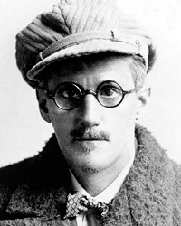

Джеймс Джойс
Роки життя: 1882−1941
Читати:
Джеймс Джойс народився в Ратгаре, забудованому георгианскими будинками районі в південній частині Дубліна, у великій родині Джона Станісласа Джойса і Мері Джейн Маррі. Невдале ведення справ майже розорило його батька, який змушений був неодноразово змінювати професію. Сім'я декілька разів переїжджала з одного району Дубліна в інший. Джеймсу вдалося отримати непогану освіту, проте злидні і невлаштованість його життя в юності назавжди залишилися в його пам'яті, що частково знайшло відображення в його творах. Сам Джойс часто проводив біографічні аналогією з головним героєм деяких його робіт і одним з головних персонажів його романів «Портрет художника в юності» і «Улісс» Стівеном Дедалом.
У віці 6 років Джойс вступив в єзуїтський коледж Клонгоуз Вудс у Клейне, а потім, в 1893 р. - в дублінський коледж Бельведер який закінчив у 1897 р. Через рік Джеймс вступив на навчання в дублінський університет (так званий Університетський коледж), який закінчив у 1902 р.
У 1900 р. в дублінській газеті «Двотижневий огляд» вийшла перша публікація Джеймса Джойса - есе про п'єсі Ібсена «Коли ми, мертві, прокидаємося». У той же час Джойс почав писати ліричні вірші. З 1916 року публікувався в літературному американському журналі «Літтл Рев'ю», заснованому Джейн Хіп і Маргарет Андерсон.
У віці 20 років Джойс поїхав в Париж. Це був його перший від'їзд на континент, де, зважаючи на фінансові проблеми, він, як колись його батько, часто змінював професії. Він працював журналістом, вчителем і т. д. Через рік після того, як він приїхав у Францію, Джойс отримав телеграму про те, що його мати перебуває у важкому стані, і повернувся до Ірландії. Після смерті матері в 1904 році Джойс знову покинув батьківщину (поселившись в Трієсті), на цей раз разом з покоївкою Норою Барнакл, на якій згодом (через 27 років) одружився.
Незадовго до початку Першої світової війни Джойс з дружиною перебралися в Цюріх, де він почав працювати над романом «Портрет художника в юності», а пізніше і над першими головами «Улісса». Подорожуючи по Європі, Джойс писав вірші. Деякі твори були опубліковані в антологіях імажинізму. Він також продовжував працювати над «Уліссом», романом, який вперше побачив світ не на батьківщині письменника (де був опублікований тільки в 1933 році), а у Франції. Це найбільш відомий твір Джойса, де автор на 600 сторінках оповідає про один день (16 червня 1904 року) дублінського єврея Леопольда Блума. Незважаючи на те, що «Улісс» створювався за кордоном, за цією книгою, як стверджував сам Джойс, «можна було б відновити Дублін у разі його руйнування». День 16 червня відзначається шанувальниками Джойса у всьому світі як Блумсдэй (Bloomsday).
У Парижі Джеймс Джойс почав роботу над своїм останнім масштабним твором - романом «Поминки по Финнегану», опублікованому в 1939 році. Цей складний експериментальний роман, однак, не був досить добре прийнятий публікою, і досі залишається книгою «для фахівців», на відміну від більш ранньої книги новел Джойса «Дублінці», тепер вважається зразковою книгою цього жанру. Популярний нині також його ранній роман «Портрет художника в юності».
Після поразки Франції і окупацію частини її території німецькими військами на початку Другої світової війни Джойс повернувся в Цюріх. Він сильно страждав від наслідків глаукоми. Здоров'я його продовжувало погіршуватися. 11 січня він переніс операцію у зв'язку з проривної виразкою і 13 січня 1941 року він помер.